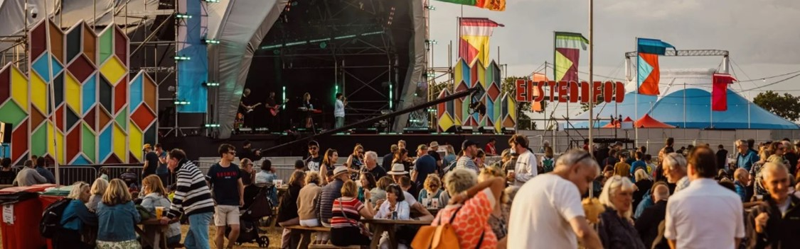
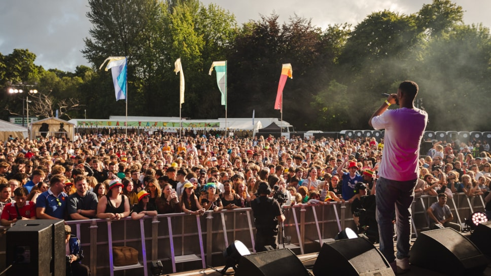
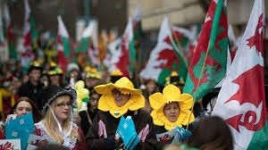
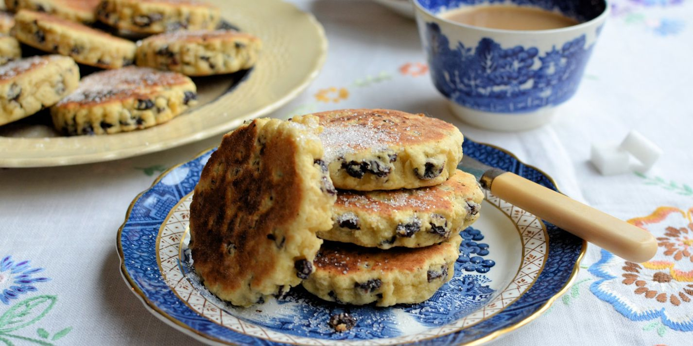

|
Music and culture festivals in Wales. Feed your mind, body and soul at one of the dozens of music festivals taking place across Wales this year. Live music from household names and emerging artists, DJ sets, street food feasts, family fun and much more. Let's get planning!
Elegant, ear-pricking and mesmerising, the harp is one of Cymru's national instruments. At Wales Harp Festival you can see performances from world class harpists, witness competitions open to players from around the world or take part in a two-day hands-on harpist course for all ages and abilities.
The festival places the music industry spotlight firmly on the emerging talent that Wales has to offer the world, alongside a selection of the best new artists and filmmakers from across the globe.
|
  |
| If you're a fan of our Welsh rugby team then you should come here and watch our Welsh rugby showcase of fierce and thrilling matches! | |
|
Eisteddfod of every year!
Must-experience eisteddfod in Wales! The Eisteddfod is the biggest touring festival in Europe, and this year, we're celebrating an incredible milestone - 850 years since the very first Eisteddfod. Join us in Eisteddfod y Garreg Las between 1-8 August 2026.
|
 |
